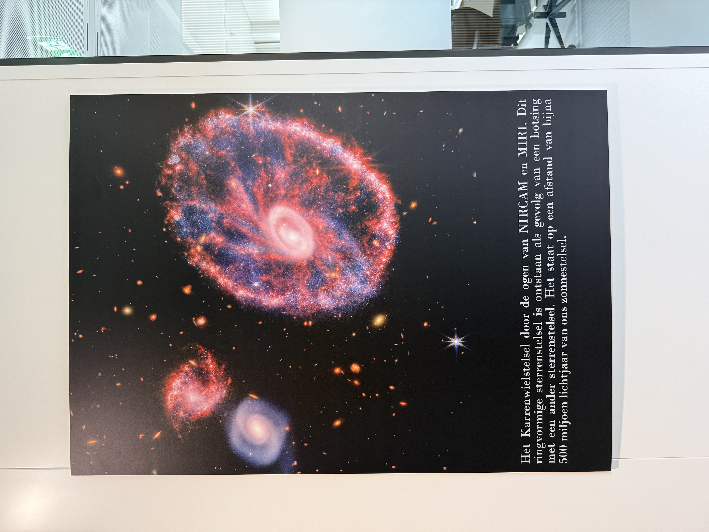
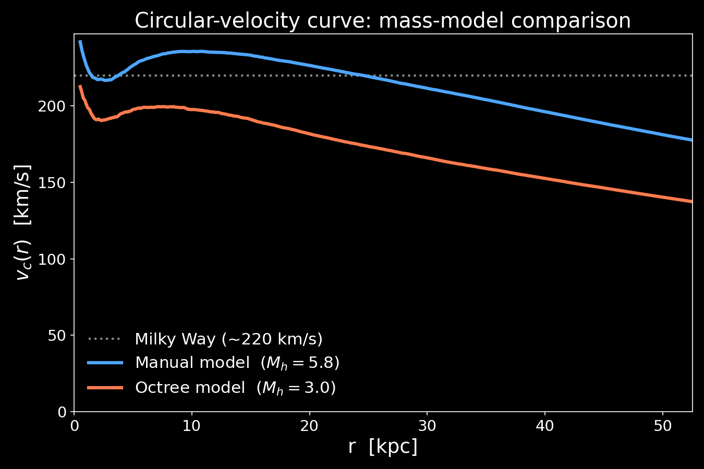
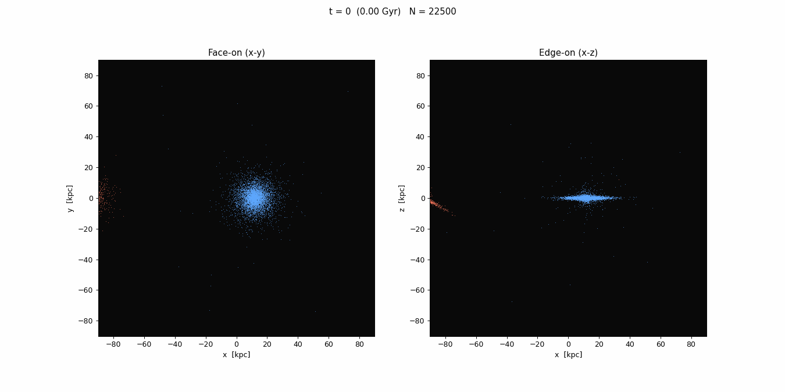

Galaxy–Galaxy Collisions
An N-body study of disk-galaxy mergers
CMPH Project 3 · Group 12
Zhaoyang Chu · Zoutong Shen
Galaxies collide — and it shows
- Tidal tails & bridges — the Antennae, the Mice
- Rings — the Cartwheel
- Disks → ellipticals after a major merger
Same gravity, wildly different outcomes.

The workflow
- Build one disk galaxy in equilibrium
- Collide two of them — a baseline merger
- Validate that the result is physics, not numerics
- Explore — turn one knob of the encounter at a time
Setup I — gravity & integration
Direct N² gravity, Plummer-softened, Numba-JIT'd:
\[ \mathbf a_i = -G\!\!\sum_{j\neq i}\! m_j\, \frac{\mathbf r_i-\mathbf r_j} {\left(|\mathbf r_i-\mathbf r_j|^2+\varepsilon^2\right)^{3/2}} \]
Stepped with velocity-Verlet (leapfrog), kick–drift–kick:
\[ \mathbf v_{1/2}=\mathbf v_0+\tfrac{\Delta t}{2}\mathbf a_0,\quad \mathbf x_1=\mathbf x_0+\Delta t\,\mathbf v_{1/2},\quad \mathbf v_1=\mathbf v_{1/2}+\tfrac{\Delta t}{2}\mathbf a_1 \]
\(\mathbf a_i\) — acceleration of particle \(i\)
\(m_j,\ \mathbf r_j\) — mass & position of particle \(j\)
\(G\) — gravitational constant
\(\varepsilon\) — softening length (no singular kicks)
\(\Delta t\) — timestep
\(\mathbf v_{1/2}\) — half-step velocity (leapfrog)
Setup II — building the galaxy: the mass
Three components, positions sampled from their density profiles (Hernquist 1993):
Disk (surface density; vertical \(\propto\operatorname{sech}^2(z/z_0)\)): \[ \Sigma_d(R)=\frac{M_d}{2\pi h^2}\,e^{-R/h} \]
Bulge: \[ \rho_b(r)=\frac{M_b\,a}{2\pi\,r\,(r+a)^3} \]
Halo (truncated isothermal): \[ \rho_h(r)=\frac{M_h\,\alpha}{2\pi^{3/2} r_c}\, \frac{e^{-r^2/r_c^2}}{r^2+\gamma^2} \]
\(G=1\) units: \(h=3.5\) kpc, \(M_d=5.6\times10^{10}\,M_\odot\), \(t=13.1\) Myr, \(v=262\) km/s.
\(\Sigma\,/\,\rho\) — surface / volume density
\(R\,/\,r\) — cylindrical / spherical radius
\(M_d\,/\,M_b\,/\,M_h\) — disk / bulge / halo mass
\(h\) — disk scale length
\(z_0\) — disk scale height (0.2 = 0.7 kpc)
\(a\) — bulge scale radius
\(r_c\) — halo truncation radius
\(\gamma\) — halo core radius
\(\alpha\) — normalization (total mass \(=M_h\))
Setup II — the built galaxy

Setup III — building the galaxy: the motion
Velocities are set so the galaxy is already in equilibrium — it must not fly apart or collapse when released.
- Disk: rotation-supported, \( v_c^2(R)=R\,\dfrac{d\Phi}{dR}\), with radial spread fixed by the Toomre criterion (we set \(Q=1.5\) at \(R=2.4h\))
\[ Q=\frac{\sigma_R\,\kappa}{3.36\,G\,\Sigma}\;\gtrsim\;1 \]
- Bulge & halo: pressure-supported — isotropic dispersions from the spherical Jeans equation:
\[ \frac{d\!\left(\rho\,\sigma_r^2\right)}{dr}=-\rho\,\frac{d\Phi}{dr} \]
Same potential \(\Phi\), three prescriptions — get it wrong and the galaxy relaxes violently in a few steps.
\(v_c\) — circular speed
\(\Phi\) — gravitational potential
\(Q\) — Toomre stability parameter
\(\sigma_R\,/\,\sigma_r\) — radial dispersion (disk / sphere)
\(\kappa\) — epicyclic frequency
\(\Sigma\,/\,\rho\) — surface / volume density
Does it hold up?
- Kepler test: 2-body orbit, 10 periods — energy drift \(\sim\!10^{-10}\), \(L\) at machine precision.
- Isolated galaxy: mostly steady, but the disk slowly thickens. A bug?
- No — it's numerical two-body relaxation, set by two knobs:
| knob | effect on the spurious heating |
|---|---|
| \(N\) | ↑N → ↓heating (\(t_\mathrm{relax}\!\propto\!N/\ln N\)); 20k→80k cuts \(z_0\) drift 67%→24% |
| \(\varepsilon\) | softens close kicks; too small → extra heating, too large → smears the disk |
Converged choice: \(N=80\text{k}\), \(\varepsilon=0.1\) (0.35 kpc). Heating is vertical only — \(h\) stable (≲6%), \(v_c\) unchanged.

Comparing the two galaxy models
| mass | direct \(N^2\) | tree code |
|---|---|---|
| \(M_d\) | 1 | 1 |
| \(M_b\) | 1/3 | 0.25 |
| \(M_h\) | 5.8 | 3.0 |
| halo frac. | 81% | 71% |
Same profile shapes; a lighter halo → the velocity curve shifts down.

The baseline merger

What's left behind — the remnant
Two rotating disks → one pressure-supported blob.
\(\Sigma(R)\) is straight in \(R^{1/4}\): a de Vaucouleurs profile — the signature of an elliptical.
Fit size \(R_e\approx4.8\) kpc — right for a \(10^{11}\,M_\odot\) elliptical. (half-mass radius 5.6 kpc, consistent)
Bound & relaxed → virial theorem holds:
\[ 2T + U = 0 \]
\(R_e\) — effective (half-light) radius
\(T,\ U\) — total kinetic / potential energy
\(\Sigma(R)\) — surface density at radius \(R\)

Beyond the baseline merger
Every result that follows starts from one baseline encounter — we hold it fixed and change a single knob at a time.
| Baseline encounter — default parameters | |
|---|---|
| particles \(N\) | 40,000 (20k per galaxy: 6k disk + 2k bulge + 12k halo) |
| softening \(\varepsilon\) | 0.1 = 0.35 kpc |
| timestep \(\Delta t\) | 0.125 = 1.6 Myr |
| duration | 300 = 3.9 Gyr |
| pericentre \(r_p\) | 5 = 17.5 kpc |
| inclination | 30° |
| mass ratio | 1 : 1 |
| collision axis | in-plane (along x — vs head-on along z, Axis 5) |
Axis 1 — Pericentre
How close must they pass to merge?

- Small \(r_p\): rapid merger, strongest tails.
- Wide \(r_p\): clean flyby, never returns.
- Threshold between \(r_p=10\) and \(20\) (≈ 35–70 kpc).
Dynamical friction sets it: \( \dfrac{d\mathbf v}{dt}\propto -\dfrac{G^2 M\,\rho\,\ln\Lambda}{v^2}\) — a faster, wider pass loses less energy.
\(M\) — galaxy mass · \(\rho\) — background density
\(\ln\Lambda\) — Coulomb logarithm · \(v\) — relative speed
Axis 2 — Inclination
What shapes the tidal tails?

- Prograde (coplanar): long, symmetric tails.
- Retrograde (180°): almost no tails.
- The Antennae/Mice need prograde geometry (Toomre 1972).
Axis 3 — Mass ratio
When does a merger become accretion?

- 1:1 — both disks destroyed → elliptical.
- 1:8 — primary survives; secondary shredded and absorbed.
- "Merger" → "accretion" is a smooth continuum.
Minor mergers dominate the cosmic rate — they grow bulges without killing disks.
Axis 4 — Number
What if it's not just two?

- Three-body chaos — no closed orbit; which pair meets first is sensitive to setup.
- Outcome: a hotter, more disturbed remnant than any 1:1.
- Real compact groups (Stephan's Quintet) do this.
Axis 5 — Collision axis
A head-on hit makes a ring

Why a ring? — the impulse mechanism

Perpendicular impact → every disk star gets an inward kick \(\Delta v\!\sim\!2GM_\mathrm{p}/bV\); stars infall, overshoot, and rebound in phase → a coherent outward density wave. Ring at \(R\!\approx\!10\text{–}12\) kpc, expanding \(\sim\!50\) km/s — like the real Cartwheel.
Summary
| Axis | Result |
|---|---|
| Pericentre | sharp merge / flyby threshold (friction-set) |
| Inclination | prograde → tails; retrograde → none |
| Mass ratio | merger → accretion continuum |
| Number | 2-body order → 3-body chaos |
| Collision axis | head-on → Cartwheel ring |
Limits: collisionless (no gas/SF), finite N, direct-N² (no tree). Each is a clear next step.
Key references
- Hernquist (1993), “N-Body Realizations of Compound Galaxies”, ApJS 86, 389 — equilibrium disk + bulge + halo ICs.
- Toomre & Toomre (1972), “Galactic Bridges and Tails”, ApJ 178, 623 — prograde vs retrograde encounters.
- Lynds & Toomre (1976), “On the Interpretation of Ring Galaxies: The Binary Ring System II Hz 4”, ApJ 209, 382 — the Cartwheel mechanism.
- Chandrasekhar (1943), “Dynamical Friction. I. General Considerations: the Coefficient of Dynamical Friction”, ApJ 97, 255.
- de Vaucouleurs (1948), “Recherches sur les Nébuleuses Extragalactiques”, Ann. d'Astrophys. 11, 247 — the \(R^{1/4}\) profile.
- Naab (2006), N-body Simulations and Galaxy Formation — practicum manual (model units & exercises).
Thank you
Questions?
Backup slides
↓ for detail figures.
Cartwheel — full ring diagnostic

Finite-N heating: N = 20k vs 80k


Pericentre — orbit geometry & late-time flyby


Inclination — per-run panels

Mass ratio — 1:8 late-time absorption
